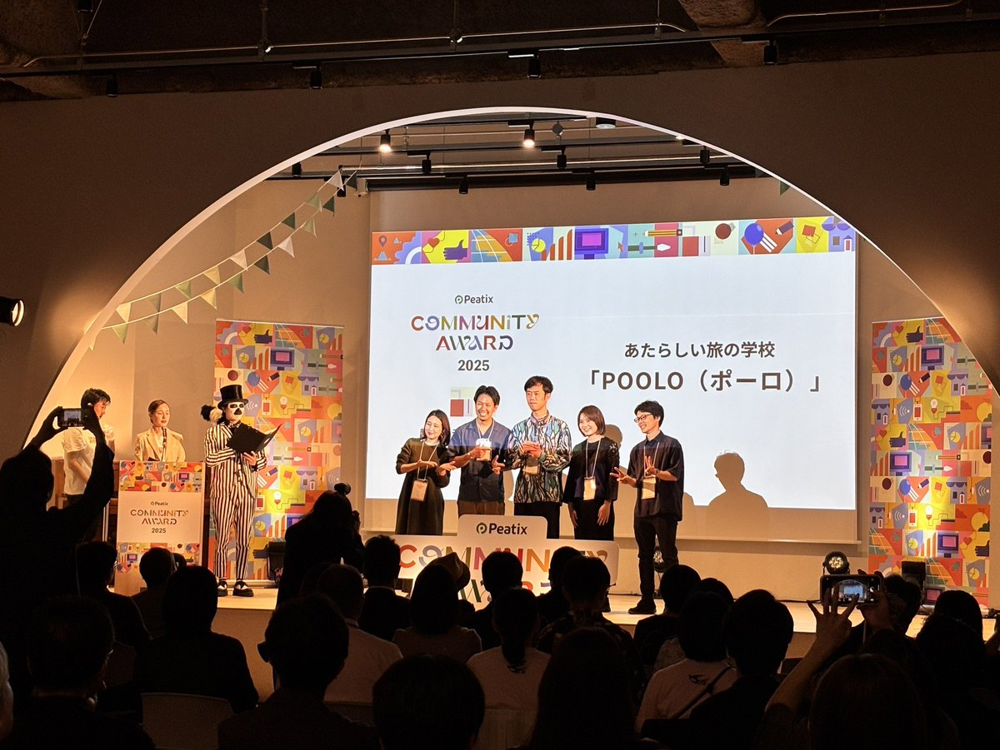

このままでいいのか？ 30代前半の キャリア論
何のために働くのか？を問う90分。
- 日時
- 2026年7月12日（日）10:00〜11:30
- 形式
- Zoom（オンライン）
- 定員
- 10名（先着順）
- 参加費
- 無料
働く意味・生きる意味を、自分のことばにしていく。
がむしゃらに走ってきたここまでの社会人生活の数年間。ある程度仕事をこなせるようになって、自分にできることが分かってきた。
そんなとき、ふと。
このまま走り続けた先に、自分は何を見たいのか？働くって、生きるって、自分にとってどういうことだろう。そんな問いが、ふと湧いてくることがある。
この90分のイベントは、ワークと対話を通して、30代前半のあなたが働く意味・生きる意味を、自分のことばにしていく場として設計しました。誰かの正解をなぞるのではなく、自分のなかから湧いてくる手がかりを、ゆっくり言葉にしていく時間です。
ワークで自分自身を深掘りし、対話を通じて、じっくりと自分の言葉にしてもらえると嬉しいです。
このイベントで向き合うこと
外の評価ではなく、自分の手応え。
年収、ポジション、同期との比較。30代前半になると、自分を測るための基準が外側にたくさん見えてきます。それはそれで大事。ただ、その基準のなかで、自分自身はいま何を感じているのか。どこに胸が動いているのか。
今日はその「自分の内側の手応え」を、対話のなかでゆっくり言葉にしていく時間です。

90分の流れ
ワークと対話を交互に。ひとりで内省する時間と、グループで深める時間を繰り返します。
-
0–5分
オープニング
-
5–10分
自己紹介ワーク
-
10–20分
対話①／3〜4人組の自己紹介
-
20–30分
本題のワーク
-
30–50分
対話②
-
50–60分
探究テーマワーク
-
60–75分
対話③
-
75–90分
クロージング
当日、こんな問いと向き合います
3つの問い（一部抜粋）。当日は計10問のワークシートに、自分のペースで書き込みながら進めます。
-
Q.ここまで走ってきたなかで、自分が思っていた以上に手応えのあった瞬間は、どんなときでしたか？「あの時、なぜか嬉しかった」みたいな小さな感覚で大丈夫です。うまく言葉にしなくてOK。
-
Q.いま、自分のなかで気になっている「働く意味」「生きる意味」の問いを、ひとつだけ書き出してみてください。きれいな問いにしなくて大丈夫です。気になっている言葉や場面を、そのまま書いてみてください。
-
Q.過去に、誰かに頼まれたわけでもないのに、自然と夢中になれた経験は、どんなものでしたか？仕事のことでも、遊びでも、人間関係でも、なんでも構いません。ひとつ思い出してみてください。
この場で大切にしている対話のルール
ふだんの会話の癖を、いったん脇に置きます。アドバイスも、まとめも、目指しません。だから、ふだん出てこなかったことばが出てきます。
- 問いを返す、深める
- 沈黙を許す
- 「もう少し聞きたい」で返す
- 勝手にまとめる
- 長話・共感の演技
- 答えや解釈の提示
参加にあたっての確認事項
- PC（スマートフォン不可）からの接続が可能であること
- 顔出し・音声出しが可能な環境であること
- 無断欠席はご遠慮ください（次回以降のご参加をお断りする場合があります）
先着10名・参加無料。
気になった方は、お早めに。
こんな方へ
- 仕事に手応えが出てきて、次にどこへ向かいたいかを、ふと考えはじめた30代前半の方
- 走ってきたぶん、いちど立ち止まって「自分はどう生きたいか」を見つめてみたい方
- 年収や肩書とは別軸で、自分が大事にしたい価値観を、自分のことばにしてみたい方
- 新しい情報よりも、自分のなかにすでにある手がかりに目を向けたい方
- 少人数の対話のなかで、自分のことばを見つけにいきたい方
このイベントを企画した理由

あたらしい旅の学校POOLO（ポーロ）は、旅を入り口に自分の生き方・働き方を見つめ直す大人の学び場として、7年以上続いてきました。運営しているのは、旅に関する事業を広く手がけてきた株式会社TABIPPOと株式会社CODOLIです。
30代前半でPOOLOに出会う方々と話していると、ひとつの共通項を感じます。
仕事には手応えが出てきていて、自分なりに走ってきた実感もある。同期や先輩を見ながら、ここまでよくやってきた。それでも、その先に何があるのか、自分は何を大事にして生きていきたいのか、改めて考えてみたくなる瞬間がある。
そんな方に必要なのは、新しい情報やフレームワークではなく、自分のなかにすでにある素材を、他者の問いで一緒に言葉にしていく時間ではないか。そう考えてこのイベントを企画しました。
対話のルールは、「話す人が自分の言葉をゆっくり探せるように」置いています。アドバイスや要約をされない時間だからこそ、普段の会話では出てこなかった言葉が、自分の口から自然に出てきます。
今回のイベントは、POOLOが運営する8ヶ月のオンラインプログラムPOOLO LIFEのエッセンスを90分に凝縮したものでもあります。いきなり8ヶ月はハードルが高いという方も、まずは1日、問いと対話の場を体験しに来ていただけたら嬉しいです。
2026年6月3日より、POOLO LIFE12期の募集を開始します。
ぜひ、ご参加お待ちしています。

開催概要
| 日時 | 2026年7月12日（日）10:00–11:30 |
|---|---|
| 形式 | Zoom（オンライン） |
| 定員 | 10名（先着順） |
| 参加費 | 無料 |
| 必要機器 | PC スマートフォンからの参加は不可。顔出し・音声出しが可能な環境でご参加ください |
| 主催 | POOLO運営チーム（株式会社TABIPPO／株式会社CODOLI） |
お申込み方法
-
01
LINE公式アカウントを友だち追加
-
02
メニューから「イベントに申し込む」を押下
-
03
案内に従って手続き完了
-
04
当日Zoomリンクを受け取って参加
働く意味・生きる意味を、
いちど自分のことばで描いてみませんか。
お申込みは、POOLO公式LINEからお願いしています。友だち追加後、メニューより簡単にお手続きいただけます。
イベントに申し込む